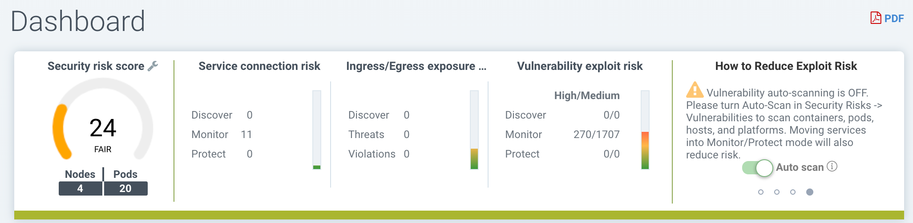

Navigation dans la console
Accès à la console
L’utilisateur par défaut et le mot de passe sont admin.
Veuillez consulter la première section Bases → Connexion au gestionnaire pour les options de configuration telles que la désactivation de https, l’accès à la console via une passerelle de périmètre de sécurité d’entreprise qui n’autorise pas le port 8443, ou le remplacement du certificat auto-signé.
Menus et navigation
Utilisez le menu sur le côté gauche pour naviguer dans votre SUSE® Security console. Notez qu’il y a des paramètres supplémentaires en haut à droite pour le profil utilisateur et la configuration multi-cluster.

Tableau de bord
Le tableau de bord montre un résumé des scores de risque, des événements de sécurité et des protocoles d’application détectés par SUSE® Security. Il montre également des détails pour certains de ces événements de sécurité. Des rapports PDF peuvent être générés à partir du tableau de bord, contenant des graphiques détaillés et des explications.
En haut du tableau de bord, il y a un résumé des risques de sécurité dans le cluster. L’outil clé à molette à côté du score de risque global peut être cliqué pour ouvrir un assistant qui vous guidera à travers les étapes recommandées pour réduire/améliorer le score de risque. Passer la souris sur chaque jauge de risque fournira une description à droite et comment améliorer le score de risque. Voir également la section de documentation séparée Améliorer le score de risque de sécurité.

-
Score de risque de sécurité global. Ceci est un résumé pondéré des domaines de risque individuels résumés à droite, y compris l’exposition au service, l’exposition à l’entrée/sortie et les risques d’exploitation de vulnérabilité. Cliquez sur la clé à molette pour améliorer le score.
-
Score de risque d’exposition au service. Ceci est un indicateur du nombre de services protégés par des règles de liste blanche et fonctionnant en mode Monitor ou Protect, où le risque est le plus faible. Un ratio élevé de services en mode Discover signifie que ces services ne sont pas segmentés ou isolés par des règles de liste blanche.
-
Score de risque d’Ingress/Egress. Ceci est un résumé pondéré des menaces réelles ou des violations de réseau détectées sur les connexions d’Ingress ou d’Egress (hors du cluster), combiné avec les connexions d’Ingress/Egress autorisées. Les connexions externes protégées par des règles de liste blanche présentent un risque plus faible mais peuvent toujours être attaquées par des attaques réseau intégrées. Remarque : Une liste des IP d’Ingress et d’Egress peut être téléchargée à partir de la section Détails d’Ingress/Egress sous forme de Rapport d’Exposition.
-
Score de risque d’exploitation de vulnérabilités. Ceci est le risque d’exploitation des vulnérabilités dans les conteneurs en cours d’exécution. Les services en mode Discover avec des vulnérabilités critiques élevées auront le plus grand impact sur le score, car ils présentent le plus grand risque. Si les services sont en mode Monitor ou Protect mais présentent toujours des vulnérabilités élevées, ils sont protégés par des règles réseau et de processus pour identifier (et bloquer) les activités suspectes, et auront donc un poids inférieur dans le score. Un avertissement sera affiché si le bouton Auto-Scan n’est pas activé pour le scan automatique en temps réel.
Certains des graphiques sont interactifs, comme indiqué ci-dessous avec les flèches vertes.

Certaines des données d’événements affichées dans le tableau de bord ont des limites, comme décrit dans la section Reporting.
Protocoles d’application détectés Ce graphique résume les protocoles d’application détectés dans les connexions en direct dans le cluster. La catégorie ‘Other’ signifie tous les protocoles HTTP non reconnus ou les connexions TCP brutes. Vous pouvez basculer entre les niveaux de Couverture d’Application et de Volume d’Application.
-
La Couverture d’Application est le nombre de conversations uniques de pod à pod détectées entre les services d’application. Par exemple, si le pod de service A se connecte au pod de service B en utilisant HTTP, cela constitue une unique HTTP ‘conversation’, mais toutes les connexions entre A et B comptent comme une seule conversation.
-
Le Volume d’Application est l’activité réseau mesurée en Gbytes pour tous les services utilisant ce protocole.
Activité réseau
Ceci fournit une carte graphique de vos conteneurs et des conversations entre conteneurs. Il montre également les connexions avec d’autres ressources locales et externes. En modes Monitor et Protect, les violations sont affichées avec des lignes rouges ou jaunes pour indiquer qu’une violation a été détectée.
|
S’il y a un grand nombre de conteneurs ou de services, l’affichage se mettra automatiquement par défaut en vue de l’espace de noms (réduit). Double-cliquez sur une icône d’espace de noms pour le développer. |
|
Cet affichage utilise un GPU local si disponible pour accélérer les temps de chargement. Certains GPU Windows ont des problèmes connus, et l’utilisation du GPU peut être désactivée dans la fenêtre Filtre avancé (voir ci-dessous pour Outils). |
Certaines des actions possibles sont :
-
Fonction de recherche pour vous aider à localiser rapidement des objets spécifiques par leur nom complet ou exact. Vous pouvez aller à Stratégie > Groupes pour localiser :
-
Pods ou conteneurs
-
Noeuds
-
Groupes
-
-
Déplacez les objets pour mieux visualiser les services et les conversations
-
Cliquez sur n’importe quelle ligne (flèche) pour voir plus de détails tels que le protocole/le port, le dernier horodatage, et pour ajouter ou modifier une règle (REMARQUE : les deux points de terminaison de connexion doivent être entièrement développés en double-cliquant sur chacun d’eux pour voir les détails de la connexion)
-
Cliquez sur n’importe quel conteneur pour voir les détails, et le ‘i’ pour les connexions en temps réel. Vous pouvez également mettre un nœud en quarantaine depuis ici. Cliquez avec le bouton droit sur un conteneur pour effectuer des actions.
-
Filtrer la vue par protocole, ou rechercher par espace de noms, groupe, conteneur (en haut à droite). Vous pouvez ajouter plusieurs filtres à la boîte de sélection.
-
Rafraîchissez la carte pour afficher les dernières conversations.
-
Zoomer/dézoomer pour passer d’une vue logique (tous les conteneurs regroupés dans un groupe de services) à une vue physique (tous les conteneurs pour le même service affichés)
-
Activer/désactiver l’affichage des composants d’orchestration tels que les équilibreurs de charge (par exemple, intégrés pour Kubernetes ou Swarm)
-
(Icône de Service Mesh) Double-cliquez pour développer un pod dans un service mesh tel qu’Istio/Linkerd2 afin d’afficher le conteneur sidecar et les conteneurs de charge de travail dans le pod.
|
Les noms de groupe dans la vue Activité Réseau sont abrégés pour une meilleure lisibilité. Les noms abrégés ne sont pas recherchables. Pour trouver un groupe, utilisez le nom complet indiqué sous Stratégie > Groupes. Par exemple : Seul le nom complet, |
Le menu Outils en haut à gauche a ces fonctions, de gauche à droite :
-
Zoomer/dézoomer
-
Fonction de recherche
-
Réinitialiser les affichages d’icônes (si vous les avez déplacées)
-
Ouvrir la fenêtre de Filtre Avancé (les filtres restent pour la session de connexion de l’utilisateur)
-
Afficher/Cacher la Légende
-
Prendre une capture d’écran
-
Rafraîchir l’affichage de l’Activité Réseau

Un clic droit sur un conteneur affiche les actions suivantes :

Vous pouvez voir les sessions actives, commencer des enregistrements de capture de paquets et mettre en quarantaine à partir d’ici. Vous pouvez également changer le mode de protection global pour le service (tous les conteneurs pour ce service) ici. Les options d’extension/réduction vous permettent de simplifier ou d’étendre les objets.
Les données de la carte peuvent prendre quelques secondes après une activité réseau pour s’afficher.
Voir l’explication des icônes de la légende en bas de cette page.
Ressources
Les ressources affichent des informations sur les plateformes, les nœuds, les conteneurs, les registres, les vérificateurs Sigstore (utilisés dans les règles de contrôle d’admission) et les composants système (SUSE® Security contrôleurs, scanners et enforceurs).
SUSE® Security inclut une plateforme de gestion des vulnérabilités de bout en bout qui peut être intégrée dans votre processus CI/CD automatisé. Analysez les registres, les images et les conteneurs en cours d’exécution ainsi que les nœuds hôtes pour détecter les vulnérabilités. Les résultats pour les registres, nœuds et conteneurs individuels peuvent être trouvés ici, tandis que les résultats combinés et les rapports avancés peuvent être trouvés dans le menu Risques de sécurité.
SUSE® Security exécute également automatiquement le rapport de sécurité Docker Bench et le benchmark CIS Kubernetes (le cas échéant) sur chaque hôte et conteneur en cours d’exécution.
Notez que l’état de tous les conteneurs est affiché dans les Ressources → Conteneurs, ce qui indique le mode de protection SUSE® Security (Discover, Monitor, Protect). Si le conteneur est affiché dans un état 'Abandonner', il est toujours sur l’hôte mais est arrêté. La suppression du conteneur le retirera de l’état 'Abandonner'.
Veuillez consulter la section Analyse et Conformité pour des détails supplémentaires, y compris comment utiliser le plug-in Jenkins SUSE® Security Scanner de vulnérabilités.
Stratégie
Cela affiche et gère la politique de sécurité en temps d’exécution qui détermine quel comportement d’application de mise en réseau de conteneur, de processus et de système de fichiers est AUTORISÉ et REFUSÉ. Toutes les conversations et toutes les activités qui ne sont pas explicitement autorisées sont enregistrées comme violations par SUSE® Security. C’est également ici que les règles de contrôle d’admission peuvent être créées.
Veuillez consulter la section Politique de sécurité de cette documentation pour une explication détaillée du comportement des règles et comment modifier ou créer des règles.
Risques de sécurité
Cela permet une gestion personnalisable des enquêtes sur les vulnérabilités et la conformité, le triage et le reporting. Recherchez facilement les vulnérabilités des images et découvrez quels nœuds ou conteneurs contiennent ces vulnérabilités. Le filtrage avancé facilite l’examen des résultats de scan et de vérification de conformité et fournit des rapports personnalisés.
Ces menus combinent les résultats des scans de vulnérabilité et des vérifications de conformité des registres (image), des nœuds et des conteneurs pour permettre une gestion et un reporting des vulnérabilités de bout en bout.
Notifications
C’est ici que vous pouvez voir les journaux des événements de sécurité, des rapports de risque (par exemple, le scan) et des événements généraux. SUSE® Security prend également en charge SYSLOG pour l’intégration avec des outils tels que SPLUNK ainsi que des notifications par webhook.
événements de sécurité
Utilisez la recherche ou le filtre avancé pour localiser des événements spécifiques. Le widget de chronologie en haut peut également être ajusté à l’aide des cercles gauche et droit pour changer la fenêtre temporelle. Vous pouvez également facilement ajouter des règles (Politique de sécurité) pour autoriser ou refuser l’événement détecté en sélectionnant le bouton Revoir la règle et en déployant une nouvelle règle.
SUSE® Security surveille en continu tous les conteneurs pour détecter des attaques connues telles que DNS, DDoS, HTTP-smuggling, tunneling, etc. Lorsqu’une attaque est détectée, elle est enregistrée ici et bloquée (si le conteneur/service est configuré pour protéger), et le paquet est automatiquement capturé. Vous pouvez voir les détails du paquet, par exemple :

La règle de refus implicite est violée
Les violations sont des connexions qui enfreignent les règles de liste blanche ou correspondent à une règle de liste noire. Les violations détaillées sont capturées et les adresses IP sources peuvent être examinées plus en détail.
D’autres événements de sécurité incluent des élévations de privilèges, des processus suspects ou une activité anormale du système de fichiers détectée sur des conteneurs ou des hôtes.
Rapports de risque
Les scans de registre, les scans en temps réel et les événements de contrôle d’admission seront affichés ici. De plus, les résultats des benchmarks CIS et des vérifications de conformité seront affichés.
Veuillez consulter la section Reporting pour des détails supplémentaires et des limites d’affichage des événements dans la console.
Paramètres
Paramètres → Utilisateurs et rôles
Ajoutez d’autres utilisateurs ici. Les utilisateurs peuvent se voir attribuer un rôle d’administrateur, un rôle en lecture seule ou un rôle personnalisé. Dans Kubernetes, les utilisateurs peuvent se voir attribuer un ou plusieurs espaces de noms pour y accéder. Des rôles personnalisés peuvent également être configurés ici pour que les utilisateurs et les groupes (par exemple : LDAP/AD) soient associés aux rôles. Voir la section utilisateurs pour les détails de configuration.
Paramètres → Configuration
Configurez un nom de cluster unique, un nouveau mode de services et d’autres paramètres ici.
Si vous déployez sur un cluster Rancher ou OpenShift, l’authentification peut être activée de sorte que les utilisateurs de Rancher ou d’OpenShift puissent se connecter à la console SUSE® Security avec les RBAC associés. Pour les utilisateurs de Rancher, un bouton/lien de connexion depuis la console Rancher permet aux administrateurs de Rancher d’ouvrir et d’accéder directement à la console SUSE® Security.
Le Nouveau mode de service définit par défaut le mode de protection pour tout nouveau service (application) précédemment inconnu ou indéfini dans SUSE® Security. Pour les environnements de production, il n’est pas recommandé de définir cela sur Découvrir.
Le mode Stratégie de Service Réseau, s’il est activé, applique le mode de stratégie sélectionné globalement aux règles réseau pour tous les groupes, et le mode de stratégie individuel de chaque groupe ne s’applique qu’aux règles de processus et de fichiers.
La Promotion Automatisée des Modes de Groupe promeut automatiquement le mode de protection d’un groupe (de Découvrir à Surveiller à Protéger) en fonction du temps écoulé et des critères.
La suppression automatique des groupes inutilisés est utile pour un 'nettoyage' automatisé des groupes découverts (et des règles auto-créées pour) qui ne sont plus utilisés, en particulier dans des environnements de développement à forte rotation. Voir les Groupes de Stratégie → pour la liste des groupes dans SUSE® Security. La suppression des groupes inutilisés nettoiera la liste des groupes et toutes les règles associées à ces groupes.
Le X-FORWARDED-FOR active/désactive l’utilisation de ces en-têtes dans l’application des règles réseau SUSE® Security. Ceci est utile pour conserver l’adresse IP source d’une connexion d’entrée afin qu’elle puisse être utilisée pour l’application des règles réseau. Activer signifie que l’adresse IP source sera conservée. Voir ci-dessous pour une explication détaillée.
Plusieurs webhooks peuvent être configurés pour être utilisés dans Règles de Réponse pour des notifications personnalisées. Les choix de format de webhook incluent Slack, JSON et des paires clé-valeur.
Un proxy de registre peut être configuré si votre connexion de scan de registre entre le contrôleur et le registre doit passer par un proxy.
Configurez l’intégration SIEM via SYSLOG, y compris les types d’événements, le port, etc. Vous pouvez également choisir d’envoyer des événements aux journaux du pod contrôleur au lieu de ou en plus de syslog. Notez que ces événements ne seront envoyés qu’au journal du pod contrôleur principal (pas à tous les journaux des pods contrôleurs dans un déploiement multi-contrôleurs).
Une intégration avec IBM Security Advisor et QRadar peut être établie.
Importer/Exporter le fichier de stratégie de sécurité. Vous pouvez également configurer SSO pour SAML et LDAP/AD ici. Consultez la section Intégration d’entreprise pour les détails de configuration. Important! Soyez prudent lors de l’importation du fichier de configuration. L’importation écrasera les paramètres existants. Si vous importez un fichier ‘policy only’, les groupes et règles de la stratégie seront écrasés. Si vous importez un fichier avec des paramètres ‘all’, alors la stratégie, les utilisateurs et les configurations seront écrasés. Notez que le mot de passe original de l’utilisateur ‘admin’ de votre contrôleur actuel sera également écrasé par le mot de passe de l’administrateur original dans le fichier importé.
Le rapport d’utilisation et les exports de journaux de collecte peuvent être demandés par votre équipe de support SUSE® Security.
Détails du comportement X-FORWARDED-FOR
Dans un cluster Kubernetes, une application peut être exposée à l’extérieur du cluster par des services NodePort, LoadBalancer ou Ingress. Ces services remplacent généralement l’IP source tout en effectuant le NAT source (SNAT) sur les paquets. Comme l’IP source originale est masquée, cela empêche SUSE® Security de reconnaître que la connexion provient en réalité de l’extérieur.
Pour préserver l’adresse IP source d’origine, l’utilisateur doit ajouter la ligne suivante aux services exposés, dans la section 'spec' du répartiteur de charge ou du contrôleur d’ingress faisant face à l’extérieur. (Réf : https://kubernetes.io/docs/tutorials/services/source-ip/)
"externalTrafficPolicy":"Local"De nombreuses implémentations de services LoadBalancer et de contrôleurs d’ingress ajouteront la ligne X-FORWARDED-FOR à l’en-tête de la requête HTTP pour communiquer la véritable adresse IP source aux applications backend. Ce produit peut reconnaître cet ensemble d’en-têtes HTTP, identifier l’adresse IP source d’origine et appliquer la stratégie en conséquence.
Cette amélioration a créé des problèmes inattendus dans certaines configurations. Si la ligne ci-dessus a été ajoutée aux services exposés et que les stratégies réseau SUSE® Security ont été créées de manière à s’attendre à ce que les connexions réseau proviennent de services proxy/ingress internes, parce que nous identifions maintenant que les connexions proviennent de "l’extérieur" du cluster, le trafic normal des applications pourrait déclencher des alertes ou être bloqué si les applications sont mises en mode "Protection".
Un interrupteur est disponible pour désactiver cette fonctionnalité. La désactivation de cette fonctionnalité indique à SUSE® Security de ne pas identifier que la connexion provient de "l’extérieur" en utilisant les en-têtes X-FORWARDED-FOR. Par défaut, cela est activé, et l’en-tête X-FORWARDED-FOR est utilisé dans l’application des stratégies. Pour le désactiver, allez dans Paramètres → Configuration, et désactivez le paramètre "Correspondance de stratégie basée sur X-Forwarded-For".
Paramètres → LDAP/AD, SAML et OpenID Connect
SUSE® Security prend en charge l’intégration avec LDAP/AD, SAML et OpenID Connect pour SSO et le mappage des groupes d’utilisateurs. Voir la section Intégration d’entreprise pour les détails de configuration.
Gestion de plusieurs clusters
Vous pouvez gérer plusieurs SUSE® Security clusters (par exemple, plusieurs clusters Kubernetes exécutant SUSE® Security sur différents clouds ou sur site) en sélectionnant un cluster principal et en rejoignant des clusters distants. Chaque cluster distant peut également être géré individuellement. Les règles de sécurité peuvent être propagées à plusieurs clusters grâce à l’utilisation des paramètres de stratégie fédérée.
Descriptions des icônes dans la légende > Activité réseau
Vous pouvez activer ou désactiver la légende dans la boîte à outils de la carte d’activité réseau.

Voici ce que signifient les icônes :
Réseau externe
Ceci est tout réseau en dehors du SUSE® Security cluster. Cela pourrait inclure l’accès public à Internet ou d’autres réseaux internes.
Groupe/Conteneur/Mesh de service en découverte
Ce conteneur est en mode Découverte, où les connexions vers/depuis lui sont apprises et des règles de liste blanche seront automatiquement créées.
Groupe/Conteneur/Mesh de service en cours de surveillance
Ce conteneur est en mode Surveillance, où les violations seront enregistrées mais non bloquées.
Groupe/Conteneur/Mesh de service en cours de protection
Ce conteneur est en mode Protection, où les violations seront bloquées.
Groupe de conteneurs
Ceci représente un groupe de conteneurs dans un service. Utilisez ceci pour fournir une vue plus abstraite s’il y a de nombreuses instances de conteneurs pour un service/application (c’est-à-dire à partir de la même image).
Conteneur non géré
Ce conteneur a été détecté mais n’est pas sur un nœud avec un SUSE® Securityenforcer dessus. Cela pourrait également représenter certains services système.
Conversation avec avertissement
Une connexion ayant généré une alerte de violation est affichée en rouge clair.